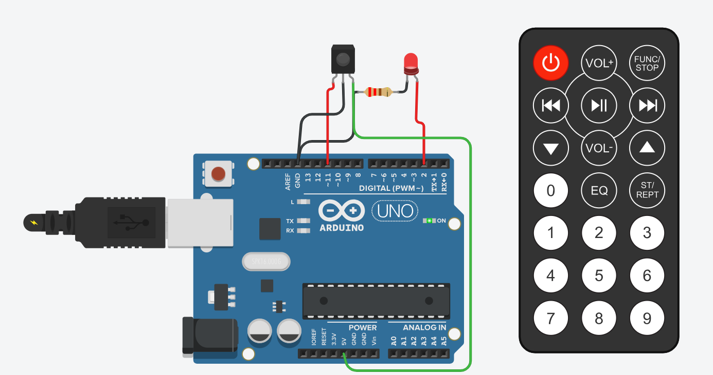

Descripción del proyecto
En este proyecto mediante un sensor infrarrojo y un control, se puede encender un led conectado a una placa de arduino uno. Cuando se presiona el boton de encendido, el led se prende, cuando se presiona el boton de pausa, el led se apaga.
Vista del proyecto
En este proyecto se implementó un sistema de control remoto utilizando un sensor infrarrojo (IR) conectado a una placa Arduino Uno. El objetivo consiste en encender y apagar un LED mediante las señales enviadas desde un control remoto convencional. El circuito funciona de la siguiente manera: el sensor infrarrojo recibe los pulsos emitidos por el control y los traduce en códigos digitales que Arduino interpreta mediante una librería específica para comunicación IR. Cada botón del control envía un código único, permitiendo programar acciones diferentes según la tecla presionada.
Volver a la página principal